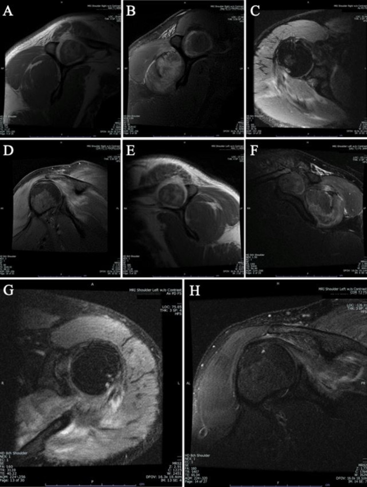
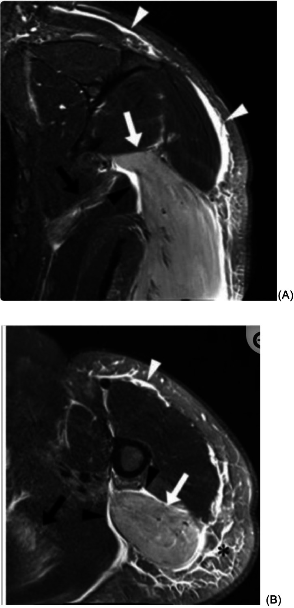
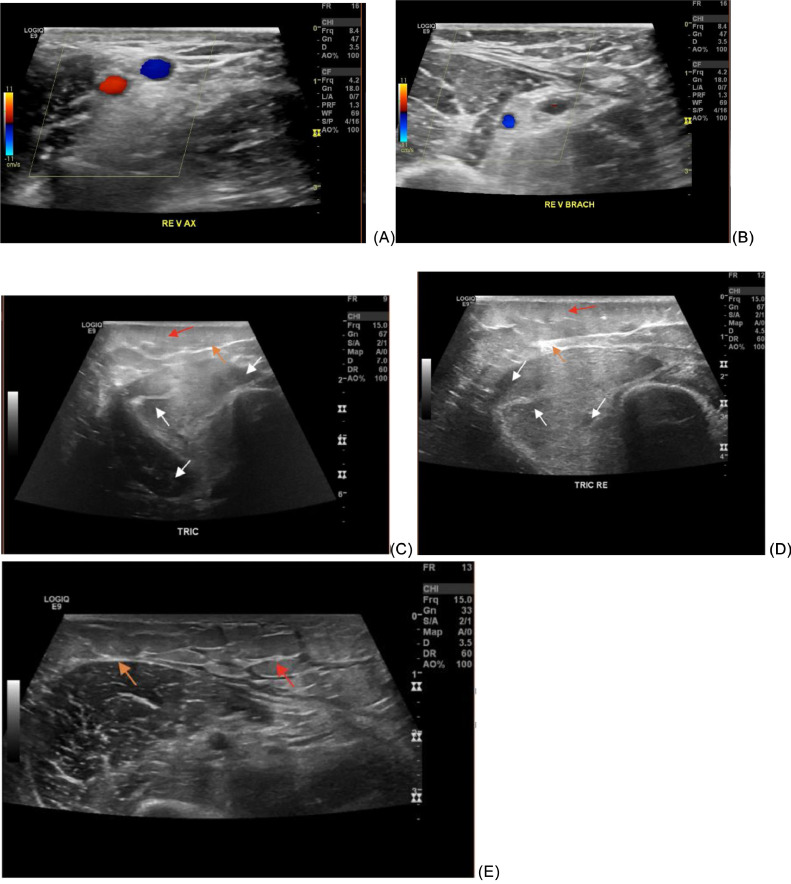

6176 — Tiêu cơ vận và tổn thương thận cấp trong hội chứng giải phóng cytokine ở trẻ / Rhabdomyolysis and acute kidney injury in paediatric cytokine release syndrome
Tags: pattern:phu-co pattern:tan-co pattern:phu-mo-mem vung:co-van vung:than protocol:MRI-co protocol:sieu-am-co score:KDIGO score:CTCAE
Mức chắc chắn (certainty): tổng hợp y văn (literature synthesis) — số liệu dịch tễ lấy từ phân tích gộp 2025 về tiêu cơ vận ở trẻ (BMC Pediatr, PMC12560446), đoàn hệ 55 trẻ (Front Pediatr 2020, PMC7500160), đoàn hệ 112 trẻ (Healthcare 2024, PMC11395255), ca CRS độ 3 kèm tiêu cơ vận sau CAR-T (World J Clin Cases 2022, PMID 36159401) và ca CRS nặng phải CRRT (Case Rep Oncol Med 2026, PMC12903790). Ảnh minh hoạ lấy từ 2 ca người lớn có cùng mẫu hình (Cureus 2021, Radiol Case Rep 2024) — ghi rõ trong chú thích, không gán bệnh nhi cho ảnh người lớn.
Câu chốt: trong CRS, đau cơ và nước tiểu sẫm màu bị quy cho "đau cơ do cytokine" — nhưng đó có thể là tiêu cơ vận (rhabdomyolysis) với CK tăng hàng chục lần và hoại tử ống thận do sắc tố đi kèm. Chẩn đoán không dựa vào hình ảnh: CK > 1.000 U/L (hoặc > 5 × ULN) là ngưỡng sinh hoá; hình ảnh chỉ trả lời cơ nào tổn thương, có áp-xe/viêm cân mạc/hoại tử không, thận còn tưới máu hay đã ứ nước. Đỉnh CK không tỷ lệ với độ nặng AKI: trong đoàn hệ 55 trẻ, rối loạn điện giải mới là yếu tố dự báo AKI, không phải CK đỉnh.
1. Tổng quan bệnh học – cơ chế hình ảnh
1.1 TẠI SAO CRS làm vỡ cơ vân
Bốn đòn bẩy cùng lúc trên một bệnh nhi đang có bão cytokine:
- Thiếu ATP do giảm tưới máu: CRS gây giãn mạch + rò mao mạch → tụt áp; cơ vân là tạng lớn nhất và là "khách hàng" cuối của dòng máu. Khi ATP giảm, bơm Na⁺/K⁺-ATPase ngừng → Na⁺ vào, Ca²⁺ vào theo gradient → calpain và phospholipase hoạt hoá → màng cơ (sarcolemma) rách.
- Sốt cao + rét run: co cơ liên tục làm tăng nhu cầu ATP đúng lúc nguồn cung giảm — cùng cơ chế với tiêu cơ sau co giật/sốt cao.
- Bất động và chèn ép: nằm lâu trên cáng/giường hồi sức ở trẻ mê/bứt rối loạn → chèn ép khoang cơ, thiếu máu cục bộ cục bộ.
- Rò mao mạch tại chỗ: IL-6 làm tăng tính thấm mao mạch cơ → phù cơ, tăng áp lực trong bao cơ → giảm tưới máu mao mạch thêm (vòng xoáy).
Khi sarcolemma rách, myoglobin (17,8 kDa), CK, K⁺, phosphate, acid uric, LDH đổ vào máu. Myoglobin lọt qua cầu thận, tại nước tiểu toan chuyển thành dạng ferryl-heme gây độc trực tiếp tế bào ống thận và đúc ống (cast); cộng thêm giảm thể tích do dịch dồn vào cơ (có thể vài lít) → AKI "hai đòn" (pigment + prerenal).
1.2 TẠI SAO hình ảnh trông như vậy (vật lý + mô bệnh)
| Chuỗi xung / phương thức | Vì sao có tín hiệu đó |
|---|---|
| T2W fat-sat / STIR | Phù cơ = nước tự do (thời gian T2 dài) → tăng tín hiệu trong cơ, nổi bật trên nền mỡ bị bão hoà. Đây là chuỗi nhạy nhất, không cần cản quang |
| T1W | Nước thay mỡ không làm tăng T1 (khác máu bán cấp/mỡ) → cơ đẳng tín hiệu đến hơi giảm, chỉ thấy to cơ, mất vân cơ; T1 có ích để loại trừ mỡ thay cơ và máu tụ |
| CT | Cơ bình thường 40–60 HU; khi phù/hoại tử nước thay nhu mô → 20–40 HU, cơ to, mờ bờ, không ngấm thuốc ở vùng hoại tử. CT không đủ nhạy để phát hiện tiêu cơ nhẹ |
| Siêu âm | Phù tách các bó cơ → dải/túi dịch không hồi âm giữa các bó, mất cấu trúc sợi, cân cơ dày và tăng âm, phù mô dưới da. Doppler màu dùng để loại trừ huyết khối tĩnh mạch và đánh giá tưới máu (không đo được áp lực khoang) |
| Thận trên siêu âm | Thận to, vỏ tăng âm (phù kẽ + đúc ống), không ứ nước; RI ≥ 0,70 trên Doppler gợi ý bệnh nhu mô — nhưng không đặc hiệu cho thể sắc tố |
Điểm mấu chốt về mô bệnh: trong tiêu cơ vận cấu trúc bó cơ vẫn còn (hoại tử dạng lưới, chưa hoá lỏng) — khác áp-xe cơ (ổ dịch có vỏ ngấm thuốc) và viêm cân mạc hoại tử (dịch dọc cân, khí trong mô). Vì vậy ảnh chỉ "phù cơ lan toả" không đủ gọi nhiễm trùng hoại tử.
1.3 Ngưỡng định lượng bắt buộc nhớ
| Đại lượng | Ngưỡng / con số | Nguồn |
|---|---|---|
| Định nghĩa tiêu cơ vận (trẻ) | CK > 1.000 U/L hoặc > 5 × ULN, không do nguyên nhân cơ tim/loạn dưỡng cơ | PMC12560446 (tiêu chuẩn của các nghiên cứu gộp) |
| CK > 5.000 U/L | AKI ~19% so với ~8% khi CK < 5.000 U/L | PMC7500160 (trích dẫn y văn) |
| Phân tích gộp trẻ (2025) | AKI 21,3% (95% CI 14,5–30,3) · CKD 1,1% · tử vong 4,5% (1,7–11,8) · nhiễm trùng là nguyên nhân hàng đầu (~40%) | PMC12560446 |
| Myoglobin niệu | OR 22,98 (2,05–432,48) cho AKI; tuổi lớn hơn OR 1,44/1 tuổi | PMC11395255 (112 trẻ) |
| Yếu tố dự báo AKI ở 55 trẻ | Rối loạn điện giải (p < 0,05) — không có liên hệ với tuổi, giới, CK đỉnh | PMC7500160 |
| Động học CK | Đỉnh 24–72 giờ, nửa đời ~1,5 ngày (36 giờ) → giảm ~40–50%/ngày nếu ngừng tổn thương. Ví dụ thực: 14.990 → 127 U/L trong 10 ngày | PMC8569652 |
| KDIGO AKI (2012) | Độ 1: 1,5–1,9 × baseline hoặc +0,3 mg/dL/48 giờ; độ 2: 2,0–2,9 ×; độ 3: ≥ 3,0 × hoặc ≥ 4,0 mg/dL hoặc RRT | KDIGO 2012 |
| Thiểu niệu | < 0,5 mL/kg/giờ trong 6 giờ (độ 1); vô niệu 12 giờ (độ 3) | KDIGO 2012 |
| Bù dịch | 2–3 × nhu cầu duy trì, theo dõi nước tiểu 1–2 mL/kg/giờ | Đồng thuận điều trị (không có RCT) |
| CRRT | Không có bằng chứng CRRT loại myoglobin cải thiện kết cục → không khởi động CRRT chỉ vì CK cao | Cochrane 2014 (Zeng, CD008566) |
2. Mẫu hình + chẩn đoán phân biệt theo vị trí (gamut)
Mẫu hình chung: trẻ sau truyền CAR-T/blinatumomab (hoặc đang CRS nặng) đau cơ, yếu, nước tiểu sẫm màu, CK tăng → MRI/STIR phù cơ lan toả một hoặc nhiều khoang, cấu trúc bó cơ còn, cân cơ có thể dày nhưng không có ổ dịch/khí.
| Vị trí / mẫu hình | Gamut theo bối cảnh |
|---|---|
| Cơ một chi, phù lan toả, cân nguyên | Tiêu cơ vận do CRS · do thuốc (nelarabine, asparaginase, propofol, statin) · sau vận động/co giật · viêm cơ do virus (cúm, EBV) · thiếu máu cơ do tư thế |
| Cơ + dịch dọc cân + khí trong mô mềm | Viêm cân mạc hoại tử (cấp cứu ngoại) · viêm cơ mủ · áp-xe cơ · loét do đè ép nhiễm trùng |
| Một khoang căng, đau vượt thăm khám, yếu/đau thụ động | Hội chứng khoang cấp (bài 3125) · tiêu cơ vận có biến chứng khoang · huyết khối tĩnh mạch sâu |
| Phù cơ + mô dưới da đối xứng, không đau cơ | Phù toàn thân/rò mao mạch (CRS — bài 6165) · phù bạch mạch · suy tim/giảm albumin |
| Cơ + ban da (Gottron, heliotrope), yếu gốc chi | Viêm da cơ/viêm đa cơ · viêm cơ do ICI (bài 6162) · bệnh mô liên kết |
| Thận to, vỏ tăng âm, KHÔNG ứ nước | Hoại tử ống thận do sắc tố · AKI do cytokine/CRS · AKI do thuốc (cisplatin, ifosfamide) · ly giải u (bài 6183) |
| Thận to + hạch/khối ổ bụng, ứ nước | Thâm nhiễm u · chèn ép niệu quản · TLS có tinh thể urat (bài 6183) |
3. Bảng so sánh phân biệt (ma trận đối chiếu)
| Thực thể (entity) | Hình ảnh điển hình (US/CT/MRI) | Chốt vào (rule-in) | Chốt loại (rule-out) | Gợi ý xác nhận |
|---|---|---|---|---|
| Tiêu cơ vận do CRS | STIR/T2FS: phù cơ lan toả nhiều khoang, cấu trúc bó cơ còn; cân dày nhẹ; US: dịch giữa các bó, mất vân cơ | CK > 1.000 U/L + myoglobin niệu (dipstick máu dương, hồng cầu âm) + bối cảnh CRS | Không có ổ dịch vỏ ngấm thuốc, không khí trong mô → không phải áp-xe/hoại tử cân | CK 12–24 giờ/lần; xét nghiệm nước tiểu; MRI STIR nếu cần khoanh vùng |
| Viêm cơ do virus | Phù cơ khu trú/đối xứng, thường cơ thân mình; phục hồi sau 1–2 tuần | Triệu chứng hô hấp/tiêu hoá trước đó, PCR cúm/EBV (+), CK tăng vừa | CK > 10.000 kéo dài, phù tiến triển nhiều khoang → nghĩ CRS/thuốc | PCR virus, diễn tiến |
| Viêm cân mạc hoại tử | Dịch dọc cân > 3 mm, dày cân, khí trong mô mềm, phù mô dưới da, có thể ngấm thuốc không đều | Khí trong mô + đau không tương xứng + sốt/tụt áp | Không khí, không dịch dọc cân, cấu trúc cơ còn → không mổ vội | Ngoại khoa + cấy; CT có giá trị tìm khí |
| Hội chứng khoang cấp | Cơ căng, phù; MRI/CT không đo được áp lực khoang | Đau thụ động tăng + khoang căng + mạch/đo áp lực khoang > 30 mmHg (hoặc Δ < 30 mmHg) | Đau kiểm soát, không căng, không dấu thần kinh → theo dõi | Đo áp lực khoang là chốt, không phải hình ảnh |
| Viêm đa cơ/da cơ | Phù cơ đối xứng gốc chi, teo mỡ, phù dưới da; có thể xơ hoá muộn | Yếu gốc chi tiến triển + enzym cơ tăng + EMA/Myositis panel (+) | CK tăng thoáng qua, có nguyên nhân cấp (CRS/thuốc) → không phải tự miễn | Sinh thiết cơ, kháng thể đặc hiệu |
| Tiêu cơ do thuốc (nelarabine…) | Không khác về hình ảnh; thường phù cơ lan toả, khởi phát vài ngày sau truyền | Thời điểm sau truyền thuốc + CK tăng nhanh, không có CRS | CRS đang hoạt động (sốt, ferritin, IL-6) → quy về CRS | Ngưng thuốc, theo dõi CK |
| AKI do sắc tố | Thận to, vỏ tăng âm, RI ≥ 0,70, không ứ nước | CK rất cao + myoglobin niệu + creatinin tăng | Có ứ nước/giãn bể thận → nguyên nhân tắc nghẽn | Siêu âm thận + Doppler; không cản quang khi đang AKI |

Ảnh minh hoạ ở người lớn (sau mổ tim, CK 14.990 U/L), cùng mẫu hình với trẻ CRS. Các khung T1W (A, D) cho thấy cơ to nhưng tín hiệu không tăng; T2W/STIR (C, G) tăng tín hiệu lan toả cơ–cân–mô dưới da. Nguồn: Cureus 2021, PMC8569652, CC BY 4.0.4. Protocol chụp + hệ phân độ
- MRI cơ (khi cần khoanh vùng hoặc loại trừ áp-xe): 1,5 T; axial + coronal T1W và T2W fat-sat/STIR; trường nhìn phủ toàn bộ khoang nghi ngờ + so sánh bên đối diện. Tránh gadolinium khi đang AKI trừ khi cần phân biệt áp-xe; không dùng cản quang chỉ để "xem cơ".
- Siêu âm cơ: đầu dò thẳng 9–15 MHz, khảo sát nhiều điểm theo khoang, đối chiếu hai bên, Doppler màu để loại trừ huyết khối tĩnh mạch và xem tưới máu. Siêu âm không thay thế đo áp lực khoang.
- CT: chỉ khi nghi nhiễm trùng hoại tử/khí trong mô hoặc máu tụ; đo đậm độ cơ (bình thường 40–60 HU).
- Siêu âm thận: chiều dài theo tuổi, so độ hồi âm vỏ thận với gan/lách, tìm ứ nước, đo RI; bắt buộc khi có thiểu niệu để loại trừ tắc nghẽn trước khi quy AKI cho sắc tố.
- Theo dõi sinh hoá: CK, K⁺, phosphate, Ca²⁺, acid uric, creatinin, khí máu mỗi 6–12 giờ trong 48–72 giờ đầu; đo lại CK sau 12–24 giờ vì đỉnh đến muộn.
- Bù dịch: 2–3 × duy trì bằng dịch tinh thể đẳng trương, mục tiêu nước tiểu 1–2 mL/kg/giờ; không dùng bicarbonate/manitol thường quy (không có RCT chứng minh).
- CRRT: chỉ định theo AEIOU/KDIGO (toan nặng, điện giải không kiểm soát, ngộ độc, quá tải dịch, urê cao) — không chỉ định vì CK cao (Cochrane 2014).
flowchart TD
A[Trẻ CRS đau cơ + nước tiểu sẫm] --> B[Đo CK và myoglobin niệu]
B --> C{CK hơn 1000 U/L}
C -->|Không| D[Theo dõi 12 đến 24 giờ, đo lại CK]
C -->|Có| E[Siêu âm thận + Doppler]
E --> F{Có ứ nước}
F -->|Có| G[Giải quyết tắc nghẽn]
F -->|Không| H[Bù dịch 2 đến 3 lần duy trì]
H --> I{Thiểu niệu hoặc K cao hoặc toan}
I -->|Không| J[Theo dõi 6 đến 12 giờ]
I -->|Có| K[CRRT theo chỉ định AEIOU]
J --> L[MRI STIR nếu nghi áp xe hoặc hoại tử cân]
5. Biến thể bình thường và cạm bẫy
- CK bình thường không loại trừ: CK tăng sau 2–12 giờ, đỉnh 24–72 giờ → trẻ mới khởi phát đau cơ có thể còn CK trong giới hạn.
- Dipstick "máu 3+" mà hồng cầu âm = myoglobin (hoặc hemoglobin) — phải soi cặn; đừng gọi là đái máu.
- Đỉnh CK không tỷ lệ với AKI (55 trẻ: rối loạn điện giải mới dự báo AKI). Đừng trấn an vì "CK chỉ 3.000".
- Tăng tín hiệu T2 là phù, không phải chẩn đoán: phù do nằm lâu, phù toàn thân, sau chấn thương đều tăng tín hiệu. Chỉ gọi tiêu cơ khi có CK + bối cảnh.
- Đừng bỏ qua viêm cân mạc hoại tử: tiêu cơ vận có thể kèm phù mô dưới da dữ dội; chỉ khí trong mô hoặc dịch dọc cân mới đổi đường điều trị (mổ).
- Sai lầm tìm kiếm thoả mãn (satisfaction of search): bệnh nhi CRS thở nhanh → cả ê-kíp tập trung phổi (bài 6165) và không ai đo CK.
- Cản quang trong AKI: tránh gadolinium/iodine khi không cần; nếu bắt buộc chụp CT có cản quang để tìm ổ nhiễm, ghi rõ nguy cơ và bù dịch.
- Hạ calci + tăng phosphate trong tiêu cơ vận có thể giống TLS; khác ở chỗ không có khối u lớn/acid uric tăng nhanh (bài 6183).
6. Tự lượng giá — Blind Quiz
Ca 1 — Nam thanh niên mổ tim, ngày 2 đau và sưng hai vai, nước tiểu sẫm, CK 14.990 U/L.
- Hỏi: tín hiệu bất thường nằm ở cơ hay mô dưới da? Vì sao T1W không tăng? Hai chẩn đoán cần loại trừ trên lâm sàng?
- Gợi ý: so sánh khung T1W (A, D) với T2W/STIR (C, G).
Bấm để hiện đáp án (findings + chẩn đoán)
- Dấu hiệu: cơ vai–cơ delta to, T1W đẳng/giảm tín hiệu (A, D) nhưng tăng tín hiệu mạnh lan toả trên T2W/STIR (C, G), kèm phù mô dưới da và dày cân; không có ổ dịch vỏ ngấm thuốc, không khí trong mô.
- Chẩn đoán: tiêu cơ vận sau mổ (CK 14.990 U/L → 127 U/L ngày 12) với tổn thương cơ–cân–dưới da; creatinin trong giới hạn nên chưa có AKI, nhưng phải bù dịch và theo dõi.
- Vì sao T1W không tăng: phù là nước tự do (T1 dài) chứ không phải mỡ/máu bán cấp — mỡ hay methemoglobin mới làm T1 tăng.
- Loại trừ: huyết khối tĩnh mạch sâu (siêu âm Doppler) và viêm cân mạc hoại tử (khí/dịch dọc cân, đau không tương xứng).
- Nguồn ảnh: Cureus 2021, PMC8569652, CC BY 4.0 — người lớn.
Ca 2 — Nữ 36 tuổi, sau vận động nặng, đau cơ tam đầu phải, CK tăng; MRI inversion recovery.

- Hỏi: mô nào tăng tín hiệu? Có dấu hiệu nào của áp-xe/hoại tử không? Bước tiếp theo trên siêu âm?
Bấm để hiện đáp án (findings + chẩn đoán)
- Dấu hiệu: đầu dài cơ tam đầu tăng tín hiệu trên ảnh inversion recovery (mũi tên trắng), dịch dọc cân nông và sâu (đầu mũi tên), phù mô dưới da (dấu hoa thị) — cấu trúc bó cơ còn, không có ổ dịch khu trú.
- Chẩn đoán: tiêu cơ vận do vận động — cùng mẫu hình với tiêu cơ do CRS; không phải áp-xe vì không có vỏ ngấm thuốc/ổ dịch.
- Siêu âm kế tiếp: tìm dịch giữa các bó, độ dày cân, và Doppler loại trừ huyết khối tĩnh mạch (ca này Doppler tĩnh mạch bình thường).
- Nguồn ảnh: Radiol Case Rep 2024, PMC11137360, CC BY-NC-ND 4.0 (nguyên bản).
Ca 3 — Trẻ 12 tuổi CRS độ 3 sau CAR-T: đau cơ đùi, CK 8.400 U/L, nước tiểu 0,3 mL/kg/giờ, K⁺ 5,6 mmol/L; siêu âm cơ đùi.

- Hỏi: ba dấu hiệu siêu âm của phù cơ? Có cần CRRT ngay vì CK 8.400 không? Cần loại trừ gì ở thận?
Bấm để hiện đáp án (findings + chẩn đoán)
- Dấu hiệu: (1) vùng không hồi âm giữa các bó cơ (mũi tên trắng) = dịch/phù; (2) cân cơ dày, tăng âm (mũi tên cam); (3) thâm nhiễm mô dưới da (mũi tên đỏ). Ảnh A–B là Doppler tĩnh mạch thông thoáng (loại trừ huyết khối).
- CRRT: không chỉ định vì CK; chỉ định khi có điện giải không kiểm soát (K⁺ > 6,5 hoặc loạn nhịp), toan nặng, quá tải dịch, vô niệu — CRRT không chứng minh loại được myoglobin.
- Ở thận: siêu âm tìm ứ nước trước (nguyên nhân ngoại khoa), rồi mới quy cho hoại tử ống thận do sắc tố; đo RI và theo dõi nước tiểu.
- Bẫy: nước tiểu sẫm + dipstick máu dương + hồng cầu âm = myoglobin, không phải đái máu.
- Nguồn ảnh: Radiol Case Rep 2024, PMC11137360, CC BY-NC-ND 4.0 (nguyên bản).
Bài liên quan chéo
- 6165 – Phù phổi do CRS sau CAR-T/blinatumomab (cùng bệnh cảnh rò mao mạch)
- 6183 – Hội chứng ly giải u ở trẻ: ngưỡng Cairo–Bishop và khi nào lọc máu (bộ ba K⁺/phosphate/Ca giống tiêu cơ vận)
- 6171 – Viêm tụy cấp do asparaginase (độc tính thuốc trong ALL)
- 3125 – Chèn ép khoang cấp ở trẻ (biến chứng của tiêu cơ vận)
- 646 – Hội chứng khoang bụng ở trẻ
- 6162 – Viêm cơ tim do ICI (độc tính cơ do miễn dịch)
Ảnh
6176_tieu-co-van_MRI-vai_PMC8569652.jpg— Cureus 2021, PMC8569652, CC BY 4.0 (nguyên bản, người lớn).6176_tieu-co-van_MRI-triceps_PMC11137360.jpg— Radiol Case Rep 2024, PMC11137360, CC BY-NC-ND 4.0 (nguyên bản, không cắt/ghép).6176_tieu-co-van_US-triceps_PMC11137360.jpg— Radiol Case Rep 2024, PMC11137360, CC BY-NC-ND 4.0 (nguyên bản).
Không dùng để chẩn đoán độc lập khi chưa có người hướng dẫn.